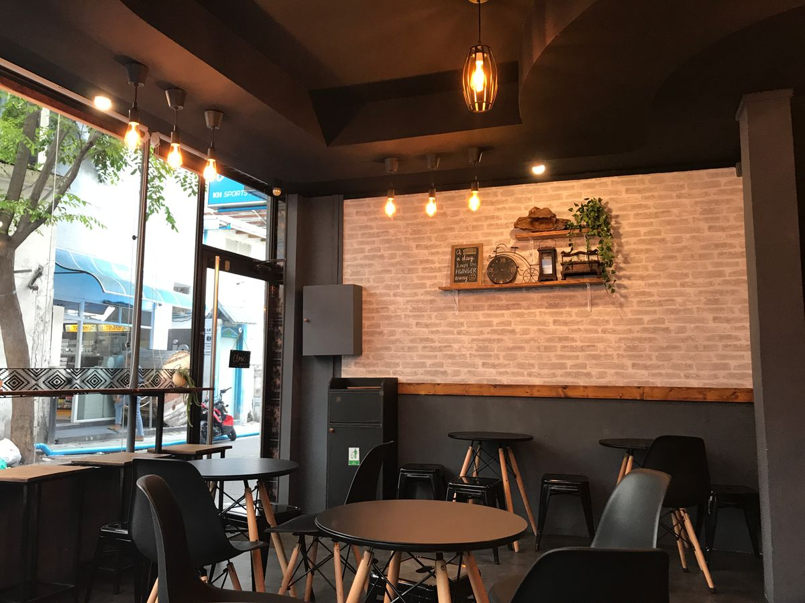
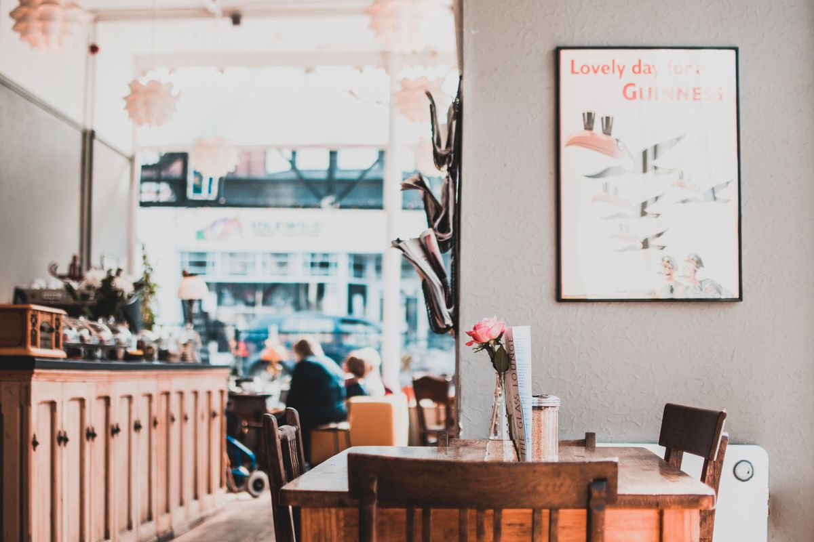

سالن عمومی و بالکن
سالن عمومی دیوان با طراحی مجلل و بالکنی رو به چشمانداز کوههای شمال تهران.
دیوان، از لوکسترین رستورانهای شمال تهران است — غذای ایرانی و بینالمللی در فضایی مجلل با سالن عمومی، بالکن، تالار آینه و اتاق VIP. میزتان را همین حالا آنلاین رزرو کنید.

دیوان چهار فضای متفاوت دارد؛ از سالن عمومی تا تالار آینه و اتاق VIP — برای هر نوع قرار و مهمانی، یک فضای جدا.
سالن عمومی دیوان با طراحی مجلل و بالکنی رو به چشمانداز کوههای شمال تهران.

تالار آینه با ظرفیت ۲۲ نفر؛ فضای مهمانیها و دورهمیهای رسمی دیوان.

اتاق VIP دهنفره برای جلسات و قرارهای خصوصی؛ آرام، جدا و کاملاً مجهز.

منوی دیوان از غذاهای سنتی ایرانی تا غذاهای بینالمللی و منوی کافه؛ با دسرهایی مثل کرم بروله و تیرامیسو.

دیوان در طبقه هشتم سام سنتر فرشته، سالهاست در فهرست لوکسترین رستورانهای تهران قرار دارد؛ جایی که برای قرارهای کاری و مناسبتهای خاص انتخاب میشود.
آینهکاری و طراحی الهامگرفته از معماری اصیل ایرانی؛ فضایی که از لحظه ورود حس مهمانی میدهد.
سالن عمومی، بالکن، تالار آینه و اتاق VIP؛ برای هر جمع و هر مناسبتی یک انتخاب جدا.
از کباب و غذاهای سنتی تا غذاهای بینالمللی و دسرهای ویژه؛ منویی برای مهمانان سختپسند.
صفحه اینستاگرام ما @divanrestaurant با بیش از ۱۰۷ هزار دنبالکننده، فضا و منوی رستوران را بهروز منتشر میکند.
نور گرم، آینهکاری و میزهایی که برای یک شب مهم چیده شدهاند.


در فرم رزرو، روز و ساعت، تعداد نفرات و فضای موردنظرتان را مشخص کنید.
برای تأیید روز و ساعت رزرو، با شمارهای که ثبت کردهاید تماس میگیریم.
به سام سنتر فرشته بیایید؛ میزتان آماده است.
تهران، فرشته، خیابان شهید فیاضی، مجتمع سام سنتر، طبقه هشتم.
هر روز از ۱۲:۳۰ ظهر تا ۲۳ شب.
بله؛ تالار آینه با ظرفیت ۲۲ نفر و اتاق VIP دهنفره برای مهمانی و جلسات خصوصی قابل رزرو است.
غذای ایرانی و بینالمللی، در کنار منوی کافه و دسرهای ویژه.
فرم رزرو همین صفحه را پر کنید یا با شماره ۰۲۱۲۲۶۵۳۸۵۳ تماس بگیرید.
فرم را پر کنید؛ برای تأیید روز و ساعت رزرو با شما تماس میگیریم. اگر ترجیح میدهید مستقیم صحبت کنیم، تماس بگیرید:
۰۲۱ - ۲۲۶۵۳۸۵۳ اینستاگرام: @divanrestaurant